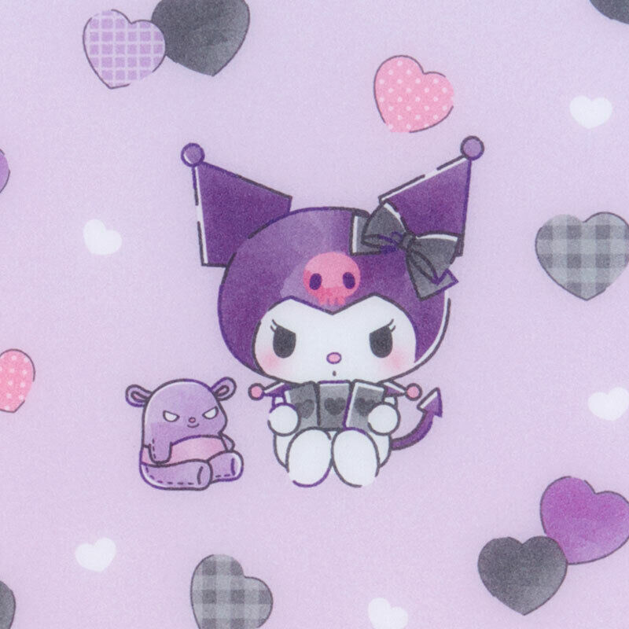
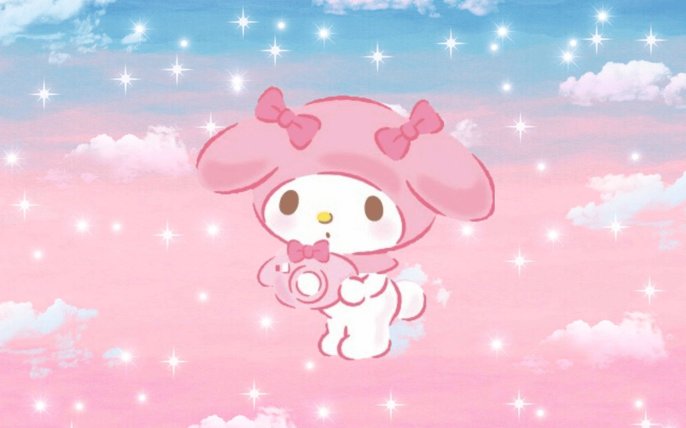

Sanrio Characters
Cinnamoroll
- White chubby puppy with a tail that looks like a cinnamon roll
- Flys with his ears
- Shy, sweet, and friendly
- Mascot of Cafe Cinnamon
Pochacco
- White dog with black floppy ears
- Sporty and playful
- Loves to play 3-on-3 basketball
- Favorite food is banana ice cream
Kuromi

- White rabbit that wears a black jester's hat with a pink skull on the front and a black devil's tail
- Delinquent
- Secretly likes cute and girly things
- Rivals with My Melody
My Melody

- White rabbit that typically wears a red or pink hood that covers her ears
- Good-natured and shy
- Favorite food is pound cake
- Very friendly towards her rival Kuromi